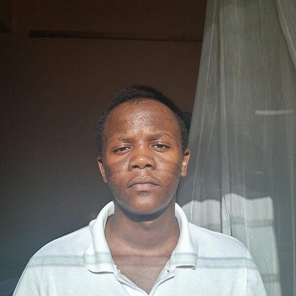

About Me
I am a Bachelor of Science student in Applied Biology at Jomo Kenyatta University of Agriculture and Technology (JKUAT). I am passionate about understanding living systems, biodiversity conservation, and applying biological knowledge to solve real-world environmental and health challenges.
My goal is to contribute to sustainable development through research in molecular biology, ecology, and biotechnology. I enjoy bridging classroom theory with practical fieldwork and laboratory experiments.
Fun fact: I can identify over 30 local plant species by leaf shape alone and once spent an entire afternoon sketching insects in the university botanical garden!
Quick facts
- Programme: BSc. Applied Biology
- Student ID: SCB225-0276
- Year of study: 2025 – present
- Home county: Machakos
- Dream job: Research Scientist in Biodiversity & Conservation